SahelSense: a hybrid VTOL that senses in the air
A survey over Sahel margins needs two things at once: vertical takeoff from whatever ground is available, and the endurance of a fixed wing once it is up. This aircraft lifts on four rotors, transitions to wing-borne flight under its own logic, and computes vegetation indices onboard rather than shipping raw imagery home.
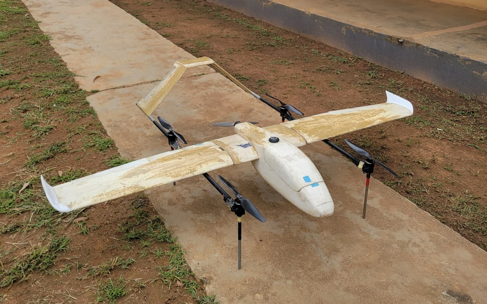
Specification
| Configuration | Quad-lift plus pusher hybrid VTOL (QuadPlane) |
|---|---|
| Wingspan | 1.9 m |
| Structure | Hot-wired foam core, composite skin, carbon booms; built from scratch |
| Autopilot | SpeedyBee F405 Wing running ArduPlane, QuadPlane configuration |
| Companion computer | Raspberry Pi 3B |
| Lift propulsion | 4 × QM5010 380 KV on 15″ props |
| Forward propulsion | T-Motor AT3520, pusher |
| Power | 2 × 6S 6500 mAh LiPo on a split bus, one pack to the forward motor, one to the four lift motors |
| Survey camera | SIYI A8 Mini, 8 MP Sony sensor, 4K |
| Onboard software | ROS 2, MAVLink telemetry bridged into ArduPlane SITL |
| Onboard perception | GLI vegetation index module; YOLOv8n inference via ONNX |
| Simulation | Gazebo with ArduPilot SITL |
| All-up weight | 5.5 kg |
| Test site | Zaria, Nigeria. 670 m elevation |
| Flights logged | 28 |
| Supervisor | Dr. Y. Danbatta, ABU Zaria |
| Repository | github.com/mk-bardi/Project-Timbuktu |
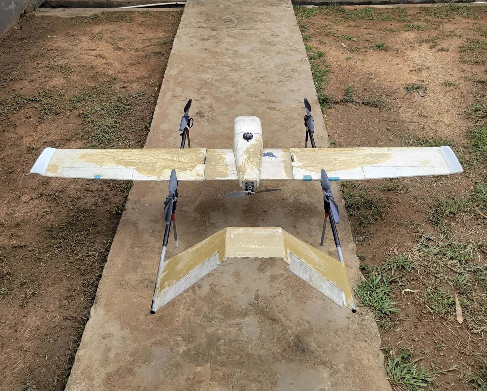
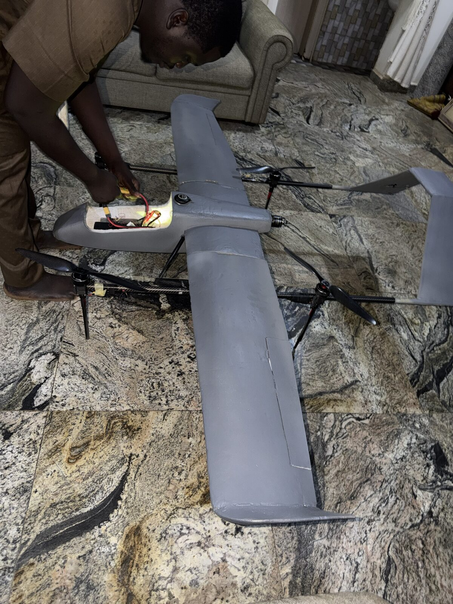
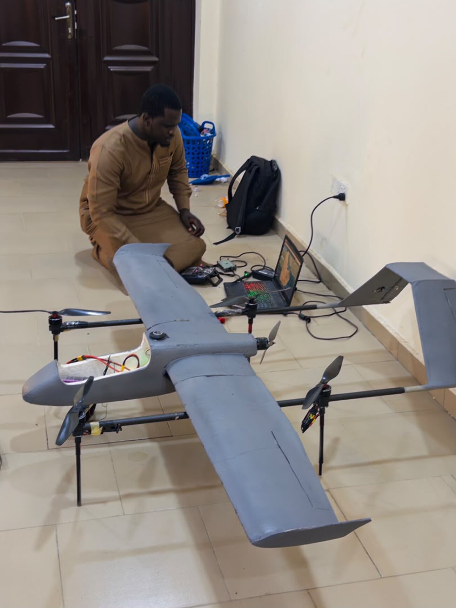
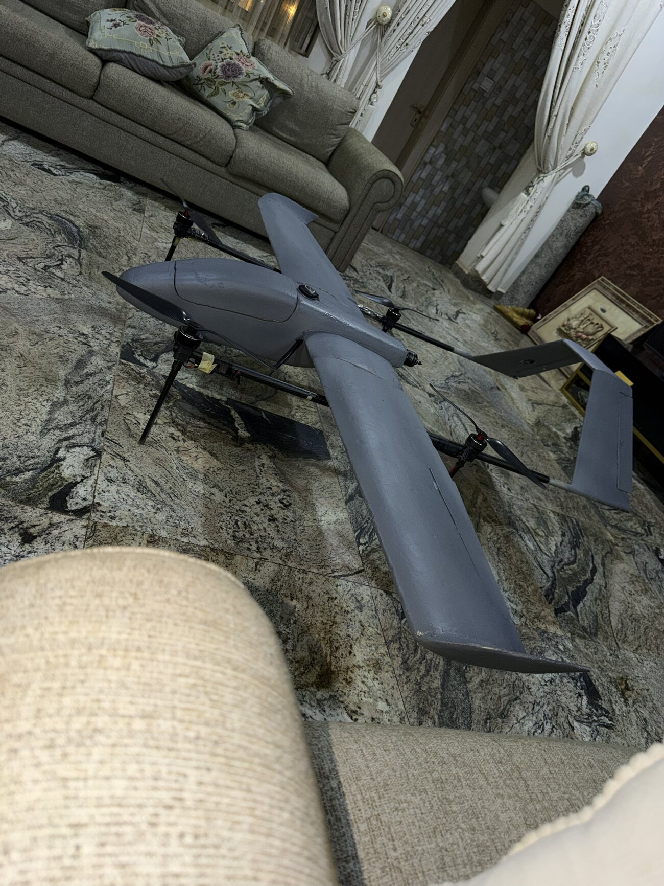
28 flights, including autonomous transition
The aircraft has flown 28 times. That record covers manual hover, assisted hover, wing-borne cruise, and autonomous waypoint missions in which the aircraft transitions between hover and forward flight on its own, with no pilot input at the transition. Every flight was logged, and the logs are what the propulsion work below rests on.
Launch and climb-out
Filmed at the test field outside Zaria near last light. The aircraft lifts vertically on the four rotors, climbs away, and goes over to wing-borne flight.
Hover at the department
Holding station
Daylight hover outside the department at ABU Zaria, on the four lift rotors, in the airframe’s glassed finish before paint.
Ground station
Pre-flight on the ground control station: aircraft position on the map, the parameter set, and the airframe on the bench before a sortie.
A hover fault, traced rather than tuned
The aircraft climbed away cleanly and then could not hold altitude. It drifted sideways or sank from around a metre and a half, and throttle stopped answering above roughly half stick. It did this in QLOITER and also in QSTABILIZE, which is manual throttle with no autonomous altitude correction at all, and it kept doing it across many arms, sessions and hardware changes.
The reflex in that situation is to reach for the gains. I treated it as a measurement problem instead, and ran a progression where each step could eliminate something, rather than changing several things at once and flying again to see what happened. Several of those steps found real faults that turned out not to be the cause, which is worth saying plainly, because a fault you find is not automatically the fault you are looking for.
-
Rule out power delivery
All power wiring replaced from 16 AWG to 10 AWG, batteries swapped. Voltage on the monitored circuit stayed stable and the behaviour did not change. Current capacity was checked separately and was never the constraint: the 5000 mAh 20C pack flown at that stage supplies around 100 A, against a hover draw of roughly 25 to 28 A across the four lift motors.
-
Find the battery compensation bug, and rule it out too
Parameter analysis showed the QuadPlane was computing its thrust ceiling from the wrong battery. Q_M_BAT_IDX pointed at the monitored instance, which was the tractor motor’s pack, not the one powering the lift motors. Logs showed the ceiling clamping to between 68 and 92 percent. That is a genuine misconfiguration, and it was fixed twice over, by rewiring the power module onto the lift pack and by disabling compensation outright. The fault persisted, so it was not the cause.
-
Separate the motors from the control loop
With Q_ESC_CAL = 1, stick input goes straight to PWM and the stabilisation loop is bypassed. In that state the aircraft behaved correctly and predictably all the way to 1889 PWM. Set back to 0, with the loop active again, the fault returned immediately. That put the motors and ESCs in the clear on direct commands and located the problem in what happens when the controller is asking for more than it is getting.
-
Read the logs motor by motor
Dataflash logs were rebuilt from the telemetry files by reassembling the embedded log chunks, then parsed directly. Across six flights, spanning battery swaps, rewiring, firmware changes and a tail removal, motor 2 was the most saturated motor in every single one, spending between 13.6 and 44.8 percent of flight time commanded above 1900 PWM. Motor 3 was consistently the least loaded. An asymmetry that survives every other variable points at one arm, not at a general power problem.
-
Recheck the thrust budget from scratch
Late on it emerged the lift props were 13 inch, not the 16 inch the sums had assumed. That invalidated the comfortable 2:1 figure that had been steering the investigation away from thrust for weeks. On the datasheet’s nearest tested size the QM4208 makes about 1780 g at full throttle, against roughly 1150 g per motor needed to hover at the 4.6 kg the aircraft weighed at that point. That is around 65 percent throttle just to stay up, with almost nothing held back, and the datasheet’s continuous ratings are quoted per ten seconds rather than sustained.
-
Resize the lift system and re-fly
The lift units went to QM5010 380 KV on 15 inch props. Same KV, so the change buys disc area rather than tip speed, and the larger motor is there to drive it. On the manufacturer’s bench figures that puts the four motors at about 10.8 kg of static thrust against 5.5 kg all-up, near 2:1, with hover sitting around 60 percent throttle instead of 65 with nothing above it. The tractor motor was left alone, since the fault was in the lift axis only.
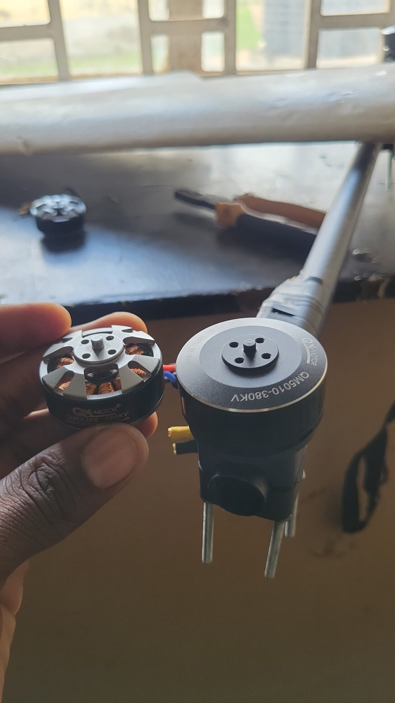
What the logs looked like
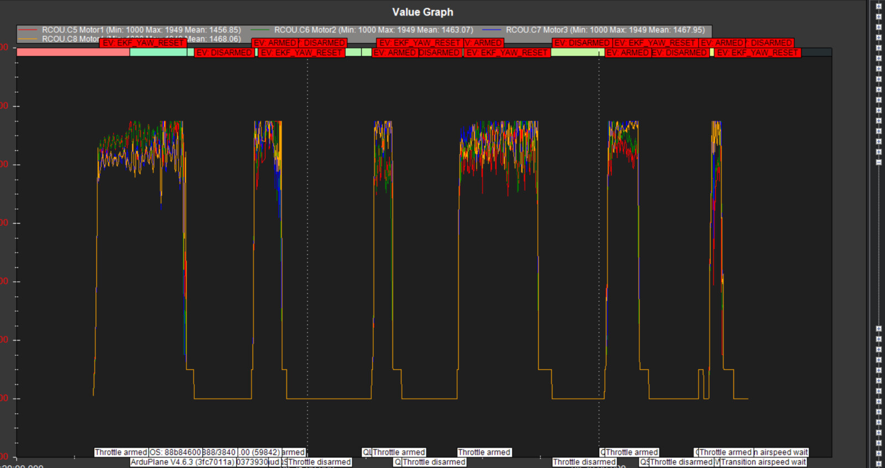
Why the site matters
Zaria sits at 670 m, and manufacturer thrust tables are not measured in that air. A propulsion sum that takes a datasheet figure at face value is optimistic before any other error is added, which is part of why a number that looked like 2:1 on paper did not behave like 2:1 in the air.
Prediction against measurement
With the lift system resized, the propulsion analysis was checked against what the aircraft learned for itself in flight. ArduPilot converges on a hover throttle and persists it, so the aircraft ends up holding its own measurement of the thrust it needs, arrived at independently of the sums that sized it.
| Measured | Q_M_THST_HOVER = 0.5496, the converged value from the aircraft’s own parameter file, giving a thrust-to-weight of 1.82:1 at 5.5 kg all-up |
|---|
The value in this is not the fix. It is that the aircraft was telling the truth in its logs the whole time, the sums were wrong because an assumption underneath them was wrong, and once that assumption was corrected the analysis predicted what the aircraft would go on to learn for itself.
Indices computed in the air, not on the ground
The aircraft runs a GLI vegetation-index module and YOLOv8n inference on a Raspberry Pi 3B, through ONNX, against imagery from a SIYI A8 Mini. The reason is bandwidth. A survey aircraft working over the Sahel cannot count on a link that will carry raw imagery home, so the useful product has to be formed onboard and the link has to carry the result instead of the input. That constraint is the subject of the paper below.
The pipeline on the bench
Before it goes up, the pipeline is exercised on the bench against a live feed. Two things run at once: detection, with boxes and confidences drawn on the frame, and the vegetation index, rendered beside the raw view so the two can be compared directly. Hold something green in front of the camera and it is the only thing that lights up in the index view while the rest of the scene falls away, which is exactly the behaviour the index has to have before it is worth flying.
Bench run of the perception stack against a live feed, with the aircraft on the table beside it.
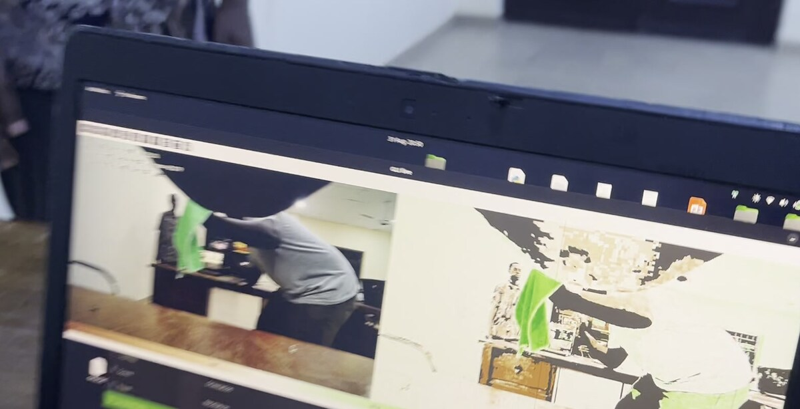
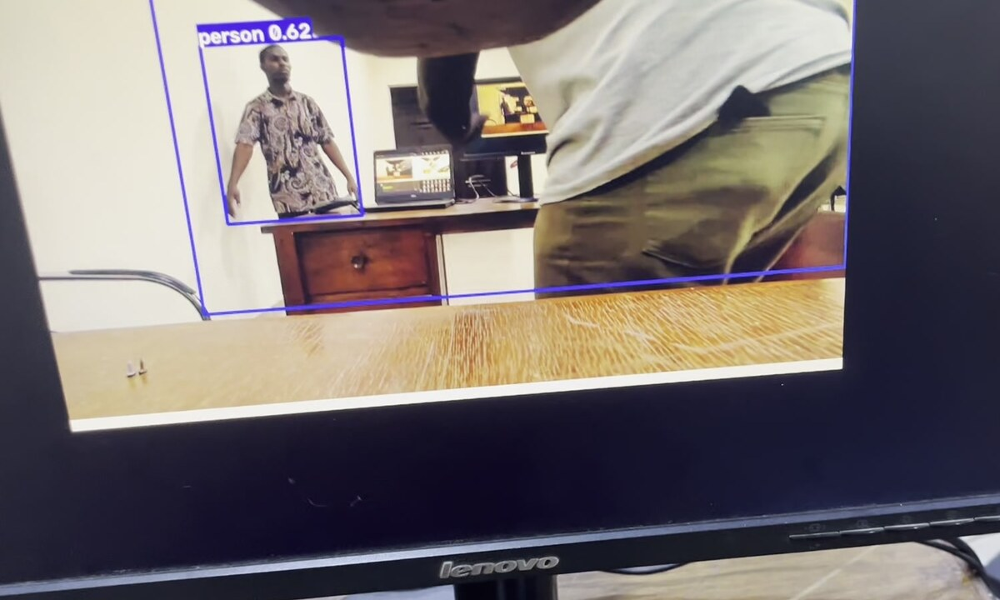
Perception-driven replanning, in progress
The work I am on now closes the loop: the aircraft triggers its own re-survey of a region from what it senses in flight, rather than flying a plan fixed before takeoff. This is where the project meets the control and autonomy questions I want to work on at doctoral level.
Submitted to ICRA 2027
Bandwidth-Constrained Aerial Survey: Measured Uplink Capacity and Onboard Vegetation Indexing. Built on the platform above and on measured link capacity rather than assumed figures.
Built by hand, in Zaria
Wing and fuselage cores were cut and shaped from foam, then glassed and faired. There was no airframe supplier in the loop and no kit to fall back on, which is why the propulsion work above had to come from measurement rather than from a datasheet.
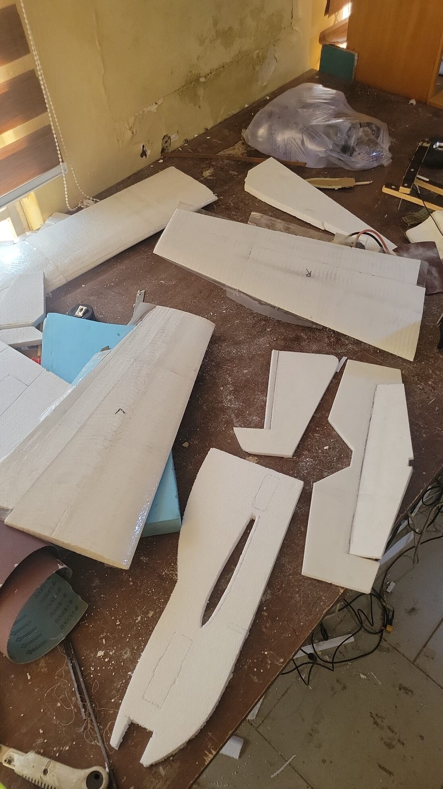
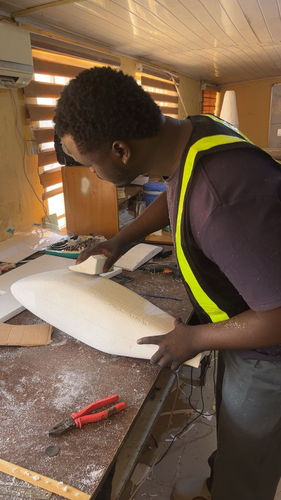
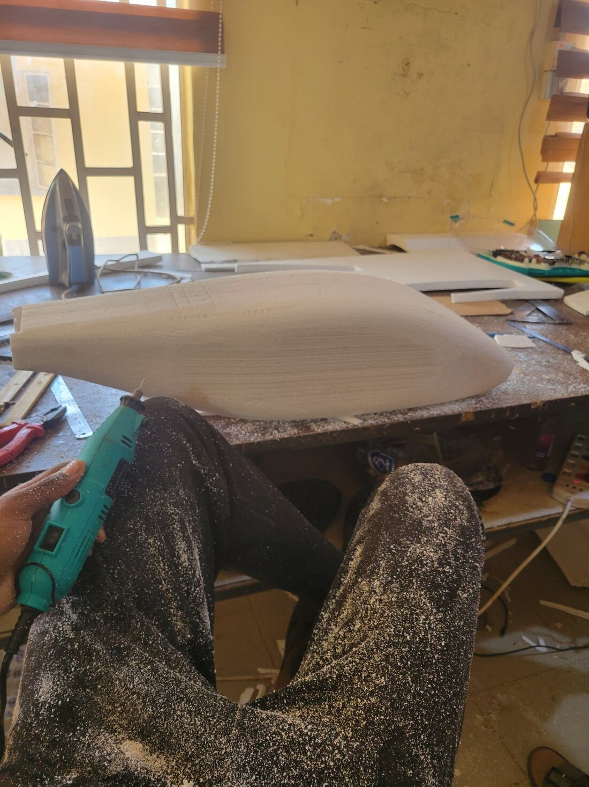
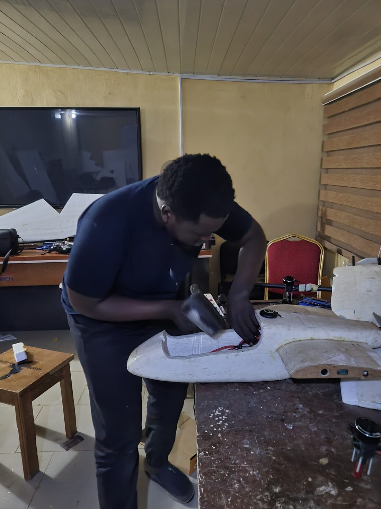